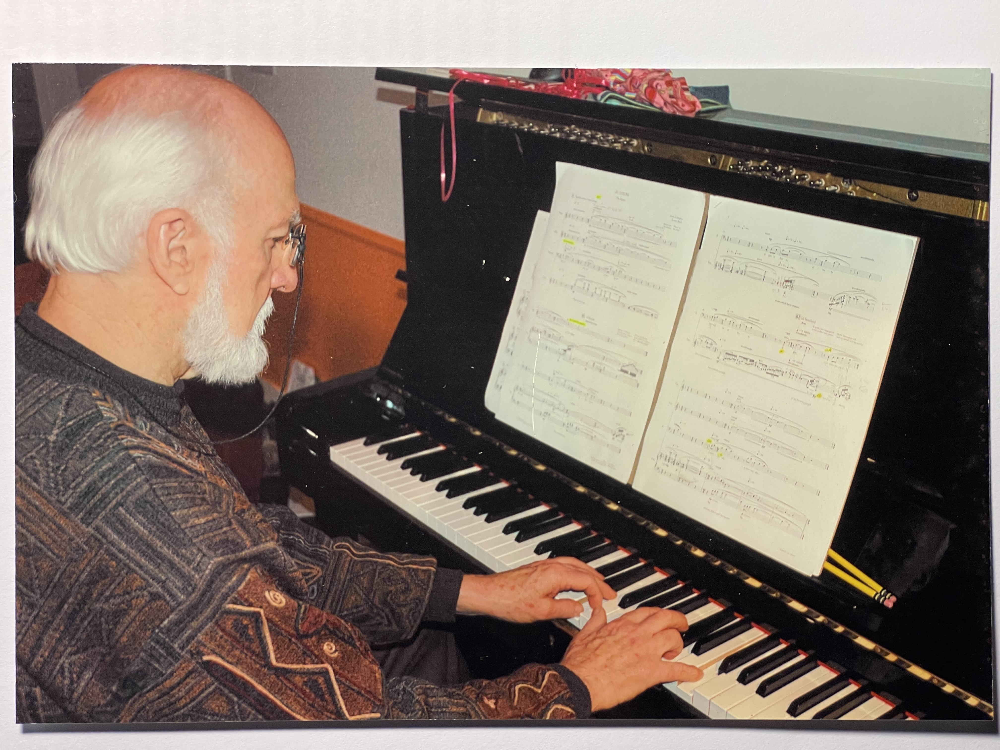
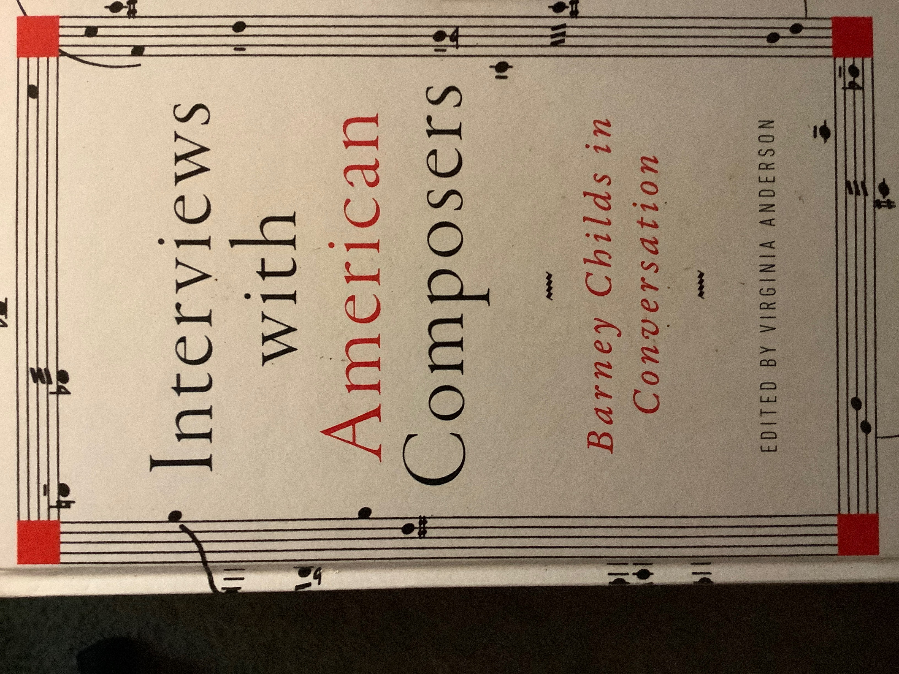

Biography
Loren Rush
Loren Rush was a composer, pianist, and a digital audio research and development pioneer. He co-founded Stanford University's Center for Computer Research in Music and Acoustics. He was also co-founder and director of Good Sound Foundation, a California non-profit corporation dedicated to advancing the quality of the sound of live performance, and co-founder and director of Good Sound Inc., created to bring those advances to consumer audio systems and performance venues worldwide.
From New Grove Dictionary of Music and Musicians: born in Los Angeles on August 23, 1935. He studied composition with Robert Erickson from 1954 to 1960 and attended San Francisco State University (BA 1957), the University of California, Berkeley (MA 1960), and Stanford University (DMA 1969). He served as associate music director of KPFA-FM, Berkeley from 1957 to 1960, director of the Performers' Choice concerts in the San Francisco Bay Area, and founding director of the San Francisco Conservatory Artists Ensemble from 1967 to 1969, later the New Music Ensemble.
His appointments included teaching positions at the San Francisco Conservatory, where he chaired the composition department from 1967 to 1969, and Stanford from 1968 to 1969, and the associate directorship of Stanford's Center for Computer Research in Music and Acoustics from 1975 to 1985. Among his honors are the Prix de Paris, the Rome Prize, a Guggenheim Fellowship, and commissions from the Fromm Foundation and the San Francisco Symphony Orchestra. His music has been performed by the Boston Symphony, New York Philharmonic, San Francisco Symphony Orchestra, St. Louis Symphony, Brooklyn Philharmonic, Detroit Symphony, Minnesota Orchestra, Rome RAI Orchestra, and Pierre Boulez' Ensemble Intercontemporain.
In its delicacy of texture and elegance of construction, Rush's early music resembles the style of other Webern-influenced American and French composers. Many early works are in open form: Hexahedron presents the pianist with a choice of routes through its structure; Nexus 16 dispenses with measured and synchronized ensemble attacks. An interest in historical precedent is clear in Dans le sable, which refers to Barbarina's cavatina in the fourth act of Mozart's Le nozze di Figaro.
In 1970 Rush began to employ amplification to increase the dynamic range of his compositions. Increasingly sophisticated computer programs allowed him to process intonation, attacks, spatial placement, and timbral manipulations of pre-recorded material with a new degree of complexity. Later works, such as Song and Dance, are dominated by rhythmic organization. Others use digital processing to refine musique concrete or to generate pure tuning systems, incorporated as taped sound into music played by conventional forces. He continued to intensify his study of intonation and acoustics, working closely with the performers for whom his music was intended.
By Charles Shere, New Grove Dictionary of Music and Musicians. Download the original PDF.
Works
Compositions
Catalog drawn from the annotated works list.
Annotated PDFInterview
Barney Childs

Loren Rush and Barney Childs, 2016.
Audio
Listen
Selected recordings
Archive